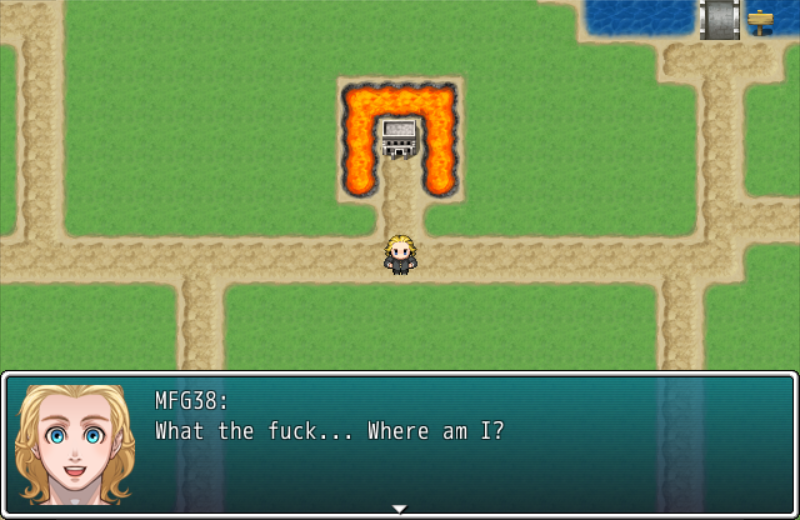
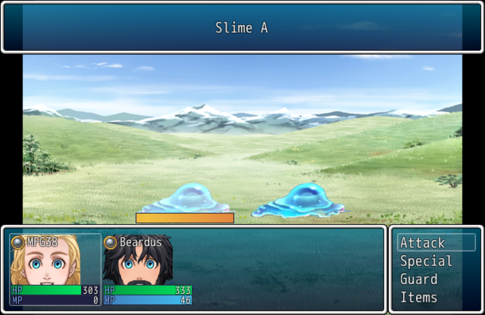
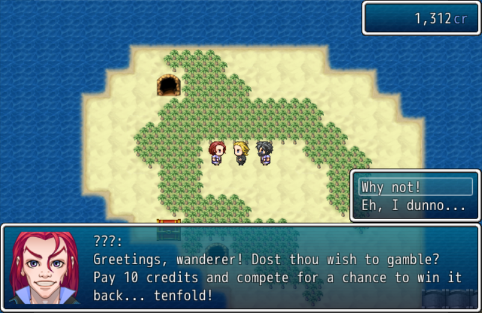
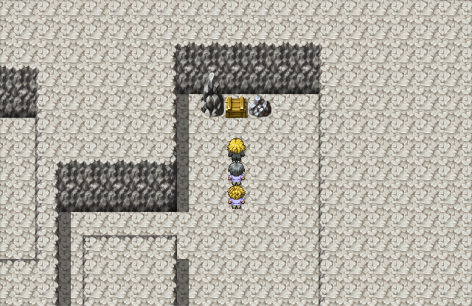

DOWNLOAD LINKS






| Status | Finished |
| Year | 2016 |
| Genre | RPG |
| Engine | RPG Maker VX Ace |
MFG38’s Average Adventure REDUX is an extended version of an unreleased effort of mine, coincidentally named MFG38’s Average Adventure. It expands upon the original game with features such as optional bosses, secret treasure stashes, dungeons and a gambling minigame.
The story of the game is more or less your average RPG deal: Yours Truly dozes off and finds himself in a different world. A voice then calls to him, telling him that the world is in danger and he is the only one who can save it.
WARNING: This game includes a fair amount of potentially offensive content. Player discretion is pretty fucking advised.